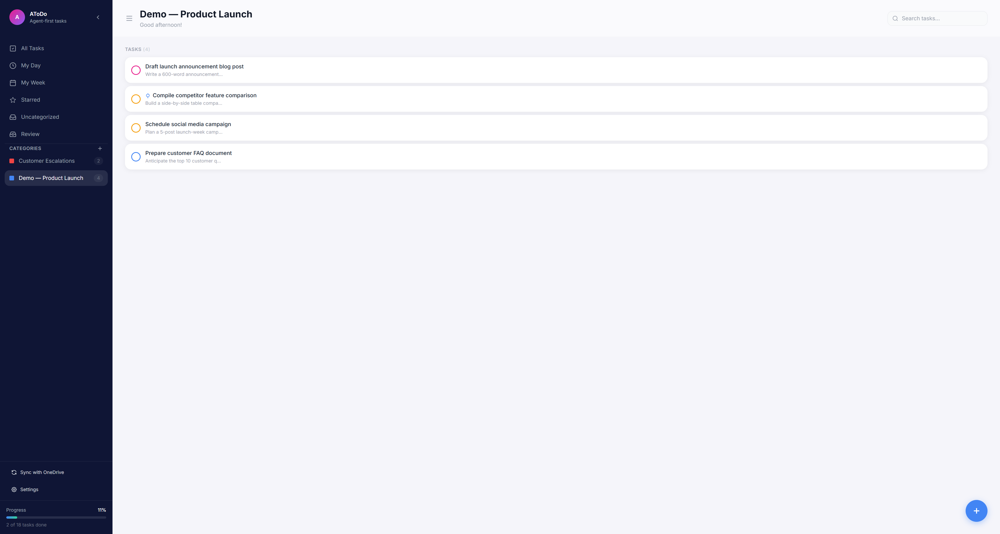
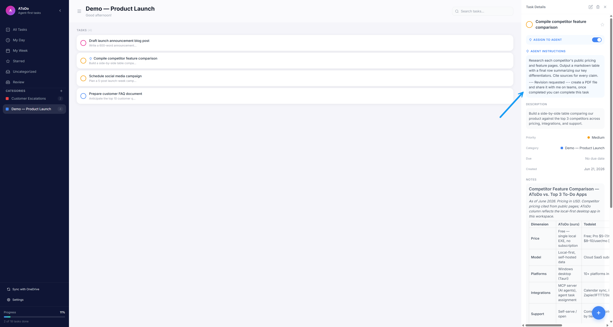
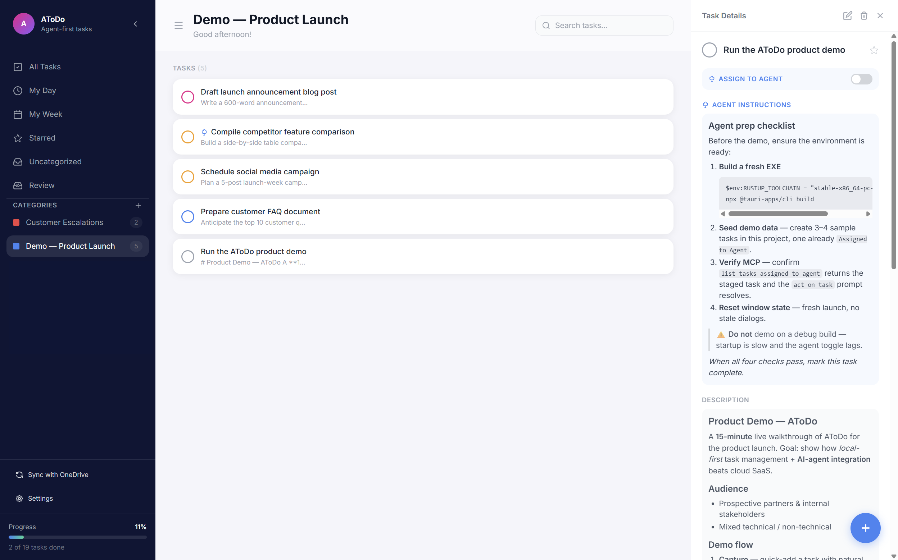
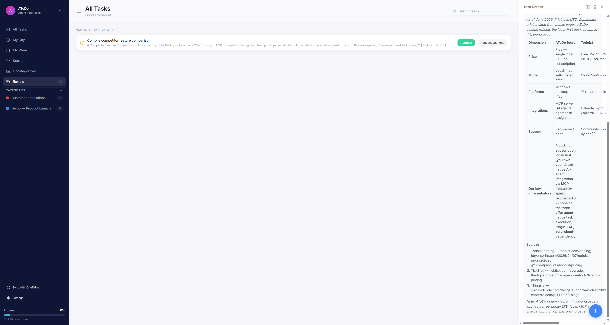

Your agents run at superhuman speed — reading email, planning your day, executing work. AToDo is the loop they run through: you triage, steer, and approve. Nothing an agent does closes without a human. That's human-in-the-loop, by design.
Agent reads inbox: 47 emails, 12 messages, 5 meetings. Plans your day.
15 tasks. Which you do, which agent does, which can wait.
Research, emails, builds, updates. Submits work to your Review queue.
Agent plans tomorrow. You leave with clarity on what's coming.
You have AI agents. They read your inbox, plan your day, execute tasks, send emails, build things. They're fast and capable — and they move at superhuman speed, fully autonomous if you let them.
Full autonomy is where trust breaks. By the time you've had coffee, an agent has created 20 tasks and acted on some. You don't know what it did, what it plans to do, or what needed your judgment. Mistakes ship. Edge cases get guessed. Accountability disappears.
Human-in-the-loop is the answer the AI field already knows: keep a person at the decision points. You triage what runs, you steer how, you approve what lands. The agent does the volume; the human keeps the judgment.
AToDo is that loop. Your agents create and execute tasks. You review, decide, and approve. Every action is visible, every result is recorded, and nothing closes without you.
Human-in-the-loop (HITL) is a design principle for AI systems: instead of letting a model act fully autonomously, you keep a person at the critical decision points — to validate, steer, and approve. It's how high-stakes AI stays accurate, accountable, and trusted. AToDo brings that principle to your everyday agent work.
The human validates agent output before it counts. No silent auto-complete.
In AToDo → the Review queue. Agent-finished tasks wait for your approval, server-enforced.
The human sets how the work is done — constraints, style, acceptance criteria.
In AToDo → Agent Instructions on every task, applied before the agent starts.
The human decides what the agent runs and what they handle themselves.
In AToDo → the Assign-to-Agent toggle and your morning triage.
Every action is visible and traceable — no "what did the AI do?" moments.
In AToDo → agents write a summary back into the task notes for every run.
Ambiguous or high-stakes calls stay with the person, not the model.
In AToDo → request changes to send work back with feedback until it's right.
Plan → triage → execute → review → approve or send back. The cycle repeats every day, with you in it at every turn.
Your agent wakes up. Reads your inbox (47 emails), Slack (12 messages), calendar (5 meetings). Analyzes what matters. Plans your entire day.
It knows your patterns. It knows what needs response, what needs preparation, what can wait. It creates a task for every decision you need to make.
Agent Analysis
Your Triage
You review the 15 tasks in AToDo. For each one: do I do this, or does my agent? Some are marked "Agent Assigned." Others you'll handle.
You're not drowning in noise. You're making focused decisions about your day. One place. All the context you need.
While you're in meetings, on calls, working on your tasks—your agent is executing its assigned work. Research. Emails. Updates. Building.
Every action is recorded. Every result is written back to the task. Finished work goes to Waiting for review so nothing closes without your approval.
Review Queue
Tomorrow's Plan
📅 3 important calls (all confirmed)
⚠️ Budget review due (prep by 8 AM)
💼 Quarterly planning (draft agenda ready)
Before you leave, your agent runs again. Reads tomorrow's calendar, inbox, upcoming deadlines. Plans what's coming. Creates tasks for decisions you'll need to make.
You leave work with clarity. No surprises tomorrow. Just actionable tasks waiting for your 8 AM review.
Your agent can do a lot, but you decide what it does. Every morning, you triage. You delegate. You keep your judgment in the loop. That's how you scale without losing yourself.
Emails, messages, meetings. Your agent reads them all. Creates tasks. You see it all in one place. Full context. No hunting across five apps.
You're doing your things. Your agent is doing its things. No waiting. No context-switching. Both moving forward at your own pace. Together.
Claude, Copilot, Scout, OpenClaw—or tomorrow's agent. Standard MCP protocol. Your tasks follow you. Your agent changes, AToDo stays.
No cloud. No vendor lock-in. Encrypted local. Your agent, your data, your infrastructure. Complete control.
Agent-completed tasks do not auto-close. They enter a server-enforced Review queue. You approve to complete, or request changes to send them back with feedback.

All agent-created and personal tasks in one unified view.

Every task has context. Agents read instructions first.

Markdown for clarity. Code blocks, tables, everything agents need.

Approve finished work or request changes and re-assign with feedback.
"My agents create 20 tasks a day, but nothing ships without me. I review at 8 AM, approve or send back. Human in the loop without slowing the loop down."
Jordan Lee
Engineering Lead
"I send my agent to research, draft emails, update status, build things. It reports back in the task. Everything visible. No more 'what did the AI do?' moments."
Alex Chen
Product Manager
"Local-first. No cloud. My agent and my tasks live on my machine. I can use any AI—Claude today, Copilot tomorrow. Tasks don't follow the vendor, they follow me."
Morgan Blake
CTO
"The morning ritual changed everything. Agent plans. I triage. We execute. Evening planning for tomorrow. It's the rhythm of working with an AI that actually scales."
Sam Rodriguez
Automation Engineer
Every day: agents plan and execute. You triage, steer, and approve. Superhuman speed, human judgment — nothing closes without you.
Windows • Free • Open Source • MCP Server • Fully Offline